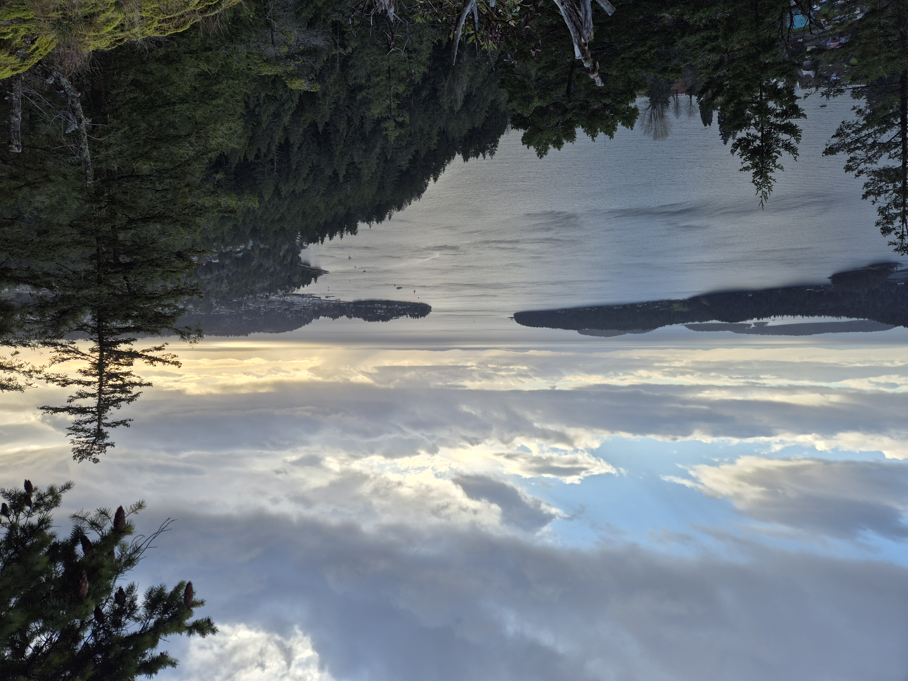
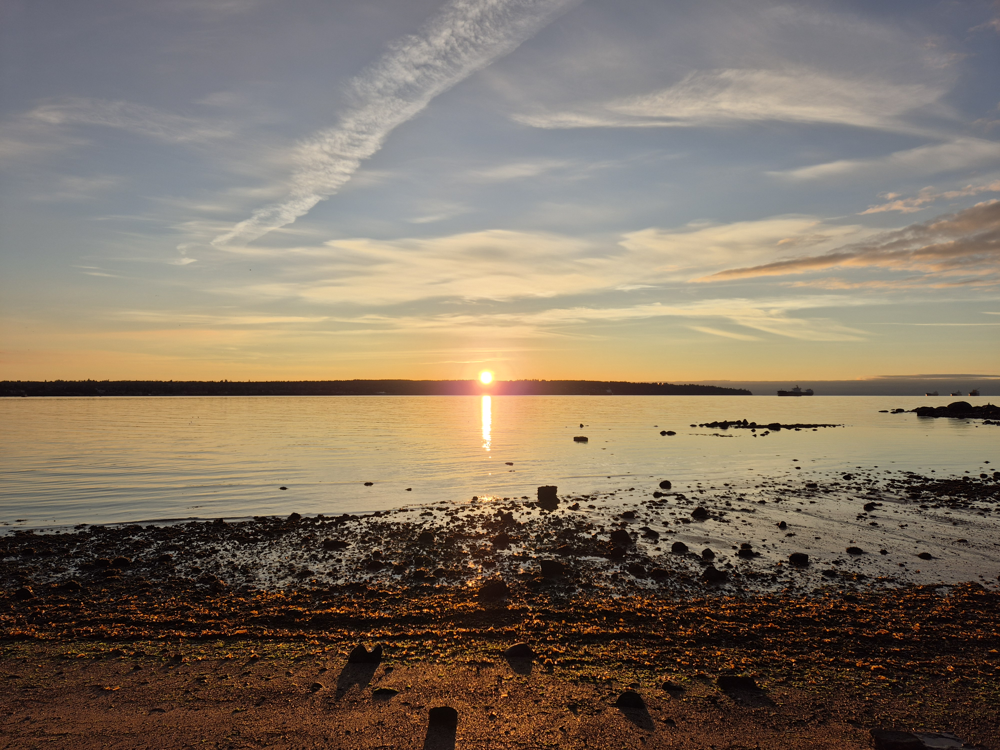
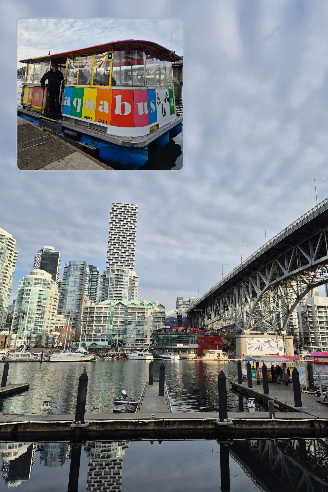
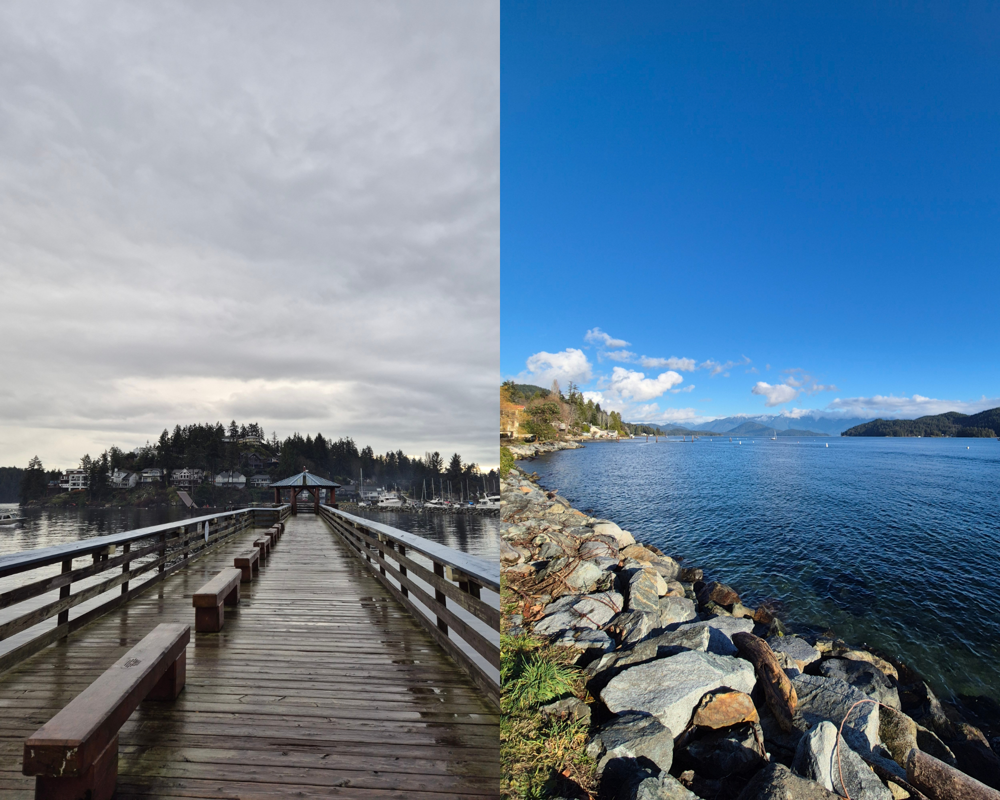

What to do in Vancouver and Gibsons, BC
In this blog, I’ll talk about a few highlights from our trip to Vancouver and the nearby seaside town of Gibsons. I will also mention a few spots we didn’t get to but are definitively top of the list for a future visit.
Now, a little back story: we went to Vancouver because of work, it wasn’t a specifically chosen destination. And, at the time, we were more in the walk-in-the-woods-surrounded-by-witchy-fog mood than in a walk-under-the-drizzle-in-the-city mood. That’s where Gibsons came in. After we found a cute house on Airbnb surrounded by trees and a couple short hikes within walking distance, we were sold.
Note: The prices detailed below are in Canadian Dollars (CAD).

Vancouver
Starting off with Vancouver, I don’t have any personal recommendations regarding where to stay, as far as neighbourhoods go. We stayed with relatives in Surrey for the first few days and near Hastings Park at an Airbnb with friends for the last part of our visit (but we didn’t choose the location).
Regarding transportation and getting around, we used the Sky Train whenever possible and the bus when that wasn’t an option. We also moved around in Ubers a fair bit and a lot of walking. I wouldn’t say the city is super well connected by public transport, but it's manageable.
Now, let’s get into attractions and places to visit.

Stanley Park
By far, Stanley Park is one of the most iconic Vancouver things to do and visit. It’s the city’s largest park and provides lovely views of the city. Walk along its scenic trails surrounded by West Coast rainforest and visit the cultural and historical landmarks while you are there. It was our favourite thing we did in Vancouver. Watching the sun set on the sea from Stanley Park was truly special.
A few specific things to do in the park:
- Bike or walk the Seawall: it’s a 10km (6-mile) path along the coast offering stunning views of the downtown skyline and the North Shore mountains. There are many places along the way where you can stop to rest and enjoy the view.
- Visit the Totem Poles at Brockton Point: this site features historic First Nations art.
- Prospect Point Lookout: great spot with views of the Lion’s Gate Bridge and the North Shore mountains. I found a bench stayed to read and take in the view for a while there.
- Explore the trails: wander in trails though the rainforest, visit Beaver Lake, or relax by the Lost Lagoon.
- Watch the 9:00 Gun: it is a historic cannon that has fired nightly at 9 PM (21hs) since 1894. We didn't stay until 9, so didn't get to witness it.
Stanley Park information
- Open from 6am to 10pm (unless otherwise posted).
- Washrooms are available from dawn until dusk.
- Official site here.

Canada Place
Canada Place is a waterfront landmark featuring the iconic white sails in downtown Vancouver. Within it, you can find attractions like the FlyOver Canada flight simulation ride, the Canadian Trail walking path, and the historic Heritage Horns. You can also find the Vancouver Convention Centre and the Vancouver Lookout nearby.
- The Canadian Trail: An outdoor walking experience on the north promenade featuring exhibits about Canada's provinces and territories.
- Heritage Horns: Listen to the 12-horn set that plays the first four notes of "O Canada" daily at noon.
- Waterfront Viewpoints: enjoy unobstructed views of Burrard Inlet, Stanley Park, and the North Shore Mountains.
- Vancouver Lookout: a short walk away, offering a 360-degree view of the city skyline. We stumbled upon it by chance on our first day of sightseeing and liked it. It gave us a general idea of the city and its attractions.
- Jack Poole Plaza: a waterfront, public space best known as the home of the permanent 2010 Olympic Cauldron, with views of Coal Harbour and the North Shore mountains.

Granville Island and riding an Aquabus
Granville Island is known for its bustling Public Market, artisan studios, and beautiful waterfront views. Key activities include sampling local food, browsing unique crafts in the Net Loft and touring the Granville Island Brewing company.
- Take the Aquabus: Ride the colorful Aquabus ferries across False Creek for a scenic view of the city skyline. I wasn’t quite what to expect from the Aquabus, but was charmed when I finally saw it arriving at the Hornby St dock. It definitively added to the Granville Island experience.
-
Granville Island Public Market: the main attraction features over 50 food vendors selling fresh produce, cheeses, seafood, artisan bread, and pastries. Must-visits include Lee's Donuts.
- Open from 9AM - 6PM daily, Summer hours (June 27th - September 1st): 9AM - 7PM daily
- Artisan & Shopping District: Explore the Net Loft and surrounding buildings for handmade jewelry, pottery, clothing, and local art.

The day I visited Granville Island was one of the only sunny days we got. So after visiting Granville Island, I walked along the southern coast of False Creek up to Science World to take the Sky Train. I enjoyed the skyline views and the parks along the way. The total distance is around 4km (2.5mi) and it took me a bit over an hour including stops along the way.
Doctor Sun Yat Sen’s Chinese Garden
Discover a hidden cultural oasis of tranquility at the Dr. Sun Yat-Sen Classical Chinese Garden, nestled in the heart of Vancouver’s Historic Chinatown. This was one of the attractions we didn’t get to, so I can’t personally recommend it. But it is definitively a Vancouver staple and worth considering if it sounds good to you.
Doctor Sun Yat Sen’s Chinese Garden information
- Open Weds-Sun: 9:30 AM – 4:00 PM
- Tickets
- Adult $16.00
- Child/Student: $12.00
- Official site here.

Capilano Suspension Bridge Park
Probably the most expensive activity on the list, Capilano Suspension Bridge Park was another of our favourites from the visit to Vancouver. One single-day admission ticket gets you unlimited access to everything in the Park. You have to choose a date and timed-entry window when you purchase your ticket. Once inside, you’re free to stay and explore as long as you like.
They offer free shuttles from a few pick up points in Vancouver. We hopped on at the Hyatt Regency Hotel and arrived at the park 20 minutes later. They also offer luggage storage during your visit. We arrived at 2 PM (14hs) and explored the park for 2.5 hours. We would have probably stayed a bit more if it wasn’t already getting dark. Besides, we needed to take the ferry to Langdale for the Gibsons portion of the visit.
Capilanos Suspension Bridge Park information
- The opening times vary month to month. But are approximately 10:00 a.m. to 5:00 p.m. with a later closing time on most months.
- Tickets
- Adults: $75.00 (Adults & Seniors save on admission online)
- Youth (13-17 years): $49.00
- Child (6-12 years): $28.00
- Official site here.

When we visited, as mentioned above, Taylor Swift was playing the last shows for the Eras Tour in Vancouver, and the Capilano Suspension Bridge had fully embraced the switie-ness of it all. There were light installations (that I think are typical for December in the Park) but with added Taylor Swift-themed decorations. As expected the park was pretty crowded but its big enough that it didn't bother us. If you are visiting at a time when there are night lights in the Park, I do recommend picking a time where you can experience the Park both with daylight and darkness to enjoy the lights.
A less crowded alternative that is further away is Lynn Canyon Suspension Bridge. We didn’t visit, but might be worth checking out, especially if you have a car available.
Cheer on the Vancouver Canucks at a hockey game
I didn’t want to end my first visit to Canada without witnessing first hand the national winter sport. A Vancouver Canucks hockey game was a must for me. Luckily, we visited during the NHL season, which typically runs from October to April. So, we headed over to Rogers Arena.
You can check the Canucks’ schedule on their official website for exact dates, but usually, they play multiple games each week, with some road trips mixed in. If you're looking to catch a home game, it’s ideal to look for when they’re hosting opponents at Rogers Arena.

VanDusen Botanical Garden + Queen Elizabeth Park
This may seem a bit random given its not-downtown location. Especially if you consider I went on a day when it was raining. But I had already decided I was going. So, armed with my rain jacket and waterproof Timberlands, I visited the VanDusen Botanical Garden and it was lovely. It was almost winter when I visited and some of the plants were showing signs of it but I still enjoyed walking around the trails.
VanDusen Botanical Garden information
-
Opening times vary monthly:
- March: 10AM - 5PM
- April: 9AM - 5PM
- May: 9AM - 6PM
- June to September 1: 9AM - 7PM
- September 2 to October 31: 9AM - 5PM
- November - February: 10AM - 2PM
- Price varies monthly as well:
- Adult: $11-16 (save $1 if bought online)
- Child: $5-11
- Official site here.

At the time, given the rain I didn’t go to the nearby Queen Elizabeth Park but you can combine both places on the same outing.
Neighbourhoods
West End
It’s considered one of the gateways to Stanley Park, where you can start traversing the Seawall. A few attractions include:
- English Bay Beach: A popular, sandy beach perfect for watching sunsets and home to the 2010 Winter Olympics Inukshuk.
- "A-maze-ing Laughter" sculpture at Morton Park, right by English Bay Beach.
- Denman and Robson Streets are where the neighbourhood's dining and shopping scene center around, with many restaurants and local shops.
- Davie Village is the heart of the LGBTQ+ community in Vancouver and hosts the annual Pride Parade.
Gastown
Gastown, Vancouver’s oldest neighborhood, is a vibrant mix of historic charm and modern style known for its cobblestone streets, Victorian architecture, and the iconic, whistling Gastown Steam Clock. Some key highlights include:
- Gastown Steam Clock: Located at the corner of Water and Cambie Streets, this 1977 landmark whistles and releases steam on the quarter-hour. When we visited, it played a bit of "Shake it off" by Taylor Swift, staying on theme with the overall city theme for the week.
- Maple Tree Square: features the statue of "Gassy" Jack Deighton, the area's founder, surrounded by historic buildings.
- Hotel Europe: A distinctive, flat-iron style building in Maple Tree Square, often compared to New York’s Flatiron Building.
- Gaoler’s Mews: A charming, secluded cobblestone courtyard off Water Street, formerly home to the city’s first jail.

Yaletown
Yaletown is a chic converted warehouse district in Vancouver and it’s known for its scenic seawall, high-end dining, and historic charm. Top sights include the False Creek seawall, the Engine 374 Pavilion (housing the first locomotive to arrive in Vancouver in 1887) at Roundhouse Community Arts & Recreation Centre and David Lam Park.
Mount Pleasant
A vibrant and pedestrian-friendly neighbourhood, it’s known for its "Brewery Creek" craft beer district, trendy Main Street boutiques, and panoramic city/mountain views from Queen Elizabeth Park. Visitors can explore colorful murals, independent shops and iconic spots like Dude Chilling Park (Guelph Park) and Bloedel Floral Conservatory. It’s a bit out of the way from traditional dowtonw Vancouver attractions, but close to the VanDusen Botanical Garden mentioned before.

Gibsons
We embarked on the Gibsons adventure after visiting Capilano Suspension Bridge Park. It was getting dark and we had to get to the port, ride the ferry and take an Uber to the Airbnb. So, we started with an Uber to the Horseshoe Bay Ferry terminal. There we purchased round trip tickets to Langdale. You can check the schedule here. We had to wait for the ferry for less than 10 minutes. The ferry trip lasted for 40-45 minutes and was uneventful. We found a spot outside where the wind wasn’t as lethally cold, and enjoyed the vague outline of the surrounding mountains and the night sky.
When we arrived at the Langdale Ferry Terminal and disembarked, we opened the Uber app with all the naïveté of people used to living in country capitals. To our shock and surprise, there were zero Ubers in the area, which had us quickly pivoting to the bus. In hindsight, we probably should have asked around about public transit and taxis beforehand. But we had been using Uber in Vancouver just fine the previous days, so it didn't occur to us to confirm.
We joined the line for the bus and waited 10 minutes or so. During this time we started suspecting we were about to have another unexpected surprise. The people in line were counting coins. I repeat, COINS! I probably sound entitled and out of touch with this comment. But at the time, to me, it seemed completely unbelievable that the bus only took cash. We asked the lovely woman before us in line and she confirmed our fear. Needless to say, we did not have any Canadian currency. Just then, the bus pulled up and we were astonished when the woman lended us the coins for both our tickets. We offered to transfer the money back numerous times but she declined. That was our first experience with Canadian politeness and general kindness. We will be forever grateful to the helpful woman who helped us with the bus fare in Langdale.
We finally got off the bus and walked 15 minutes to the Airbnb. It was as lovely as the pictures. I’ll leave the link to the cabin here, highly recommend. Right by the bus stop, there was a Gibsons Park Plaza where we found an IGA for groceries and some other convenient shops.
We had two full days in Gibsons. I will detail each one, which could be used as a potential schedule.
Two-day itinerary for Gibsons, BC
Day One
On our first day, one of our priorities was to get some cash for the bus back to Langdale Ferry Terminal. So we decided to walk to the Gibsons seaside area. We walked along the coast, perused some of the shops and even found a Christmas market at Gibsons Public Market with a submerged Santa in the staircase aquarium. We followed the exploring with a delicious lunch overlooking the water at Lunitas Mexican Eatery.
After lunch, we walked over to Granthams Landing to hike up to Soames Hill. We followed this AllTrails path. The trail includes some stairs and is not the easiest to follow, given that it is not well marked and has several confusing crossroads along the way. So following along with the AllTrails gpx was very useful to us. If you are unfamiliar with AllTrails and gpx use, you can read my guide for it.
It took us around an hour to arrive at the top of the trail and the views were beautiful. You can see Gibson’s Harbour and the surrounding islands, coasts and mountains. We stayed for a bit and had a snack. The sun was starting to go down, so we started our descent. We proceeded to get thoroughly lost, encountered a couple of deer and emerged onto a nearby road. From there we returned to our starting point to walk back to our Airbnb. It was a straight line back along Reed Rd, making it kind of boring. We were quite tired at this point and had walked almost 20km, but we finally made it back to the Airbnb.
The hike and the downtown Gibsons portion could be switched: one in the morning and the other in the afternoon. We also found an alternative loop for the Soames Hill hike that wasn’t as convenient for us at the time but has great reviews. Another detail is that there are parking lots close to the trail heads.
Day Two
For the second day, we wanted to hike in the morning and have a chill afternoon. We chose Chaster Falls as our destination for the day. We followed this AllTrails path because the trail head was closer to our cabin. But here’s an alternative one that’s longer and takes a slightly different route. Parts of the path are for mountain biking so be aware of that, as well as the possible encounters with bears.
The trail was fairly steep on the way up, but not too long. We really enjoyed walking along the tall trees surrounded by fog. At one point, a few rays of sunshine pierced through creating an even more magical landscape. When we got to the falls, they had a good amount of water and we used the spot to rest a bit. The descent was as expected, a bit slippery at times but not too bad. A few people reported muddy conditions for this trail on other occasions. All in all, we really liked the trail for a morning walk.
Final thoughts
While Vancouver was a bit underwhelming to me, we really enjoyed our Gibsons side quest. Some of the big Canadian parks were already on our radar, but became more of a priority after witnessing the bit of the natural beauty in BC first hand.